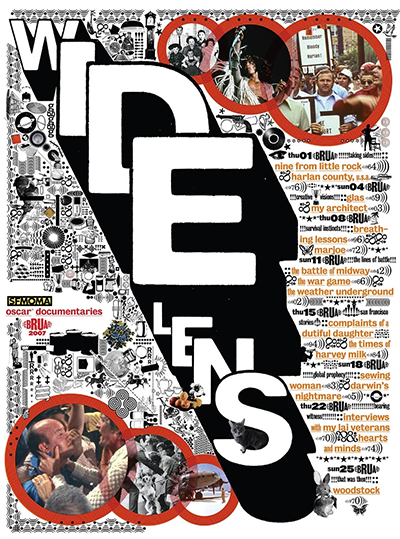
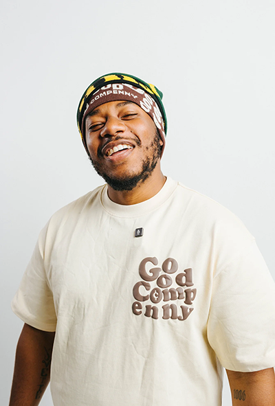
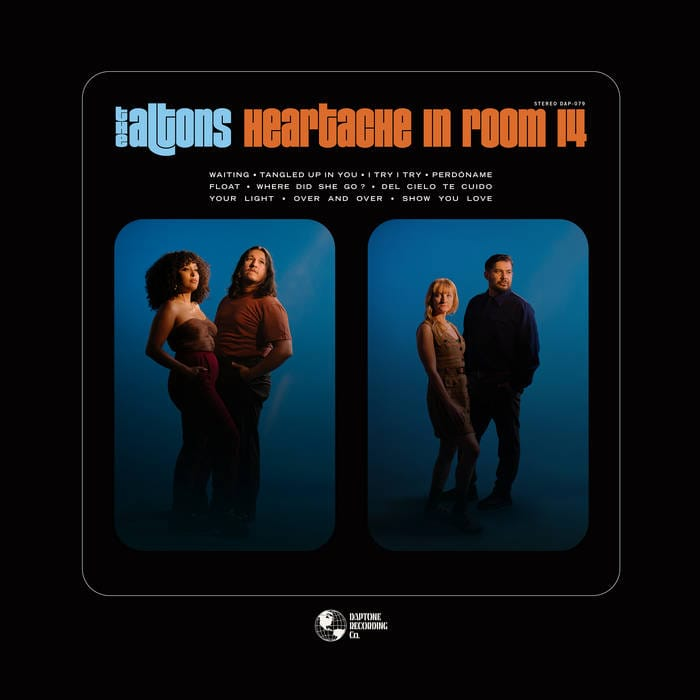

This is a graphic designer whose work was recommended to me to look up. I ended taking a look and I found the style very appealing. His work is very experimental and that’s is how I like to approach my work as well, it was the main he was recommended to me. I ended up taking an interested and see his work whenever need inspiration.

This is an independent musician/creative native to the Bay Area. I find him inspiring because he is someone who never gave up on him or his dream. He strongly represents the Bay Area with his positive message. His journey shows me to never stop fighting for your dream and to take risk because you never know what will happen.

This is a band that I listen to constantly; they were even the first concert I ever attended. I enjoy their sound and the vibe of their music. I get inspired by them when I work on projects mostly because it puts me in a good mental state and mood..